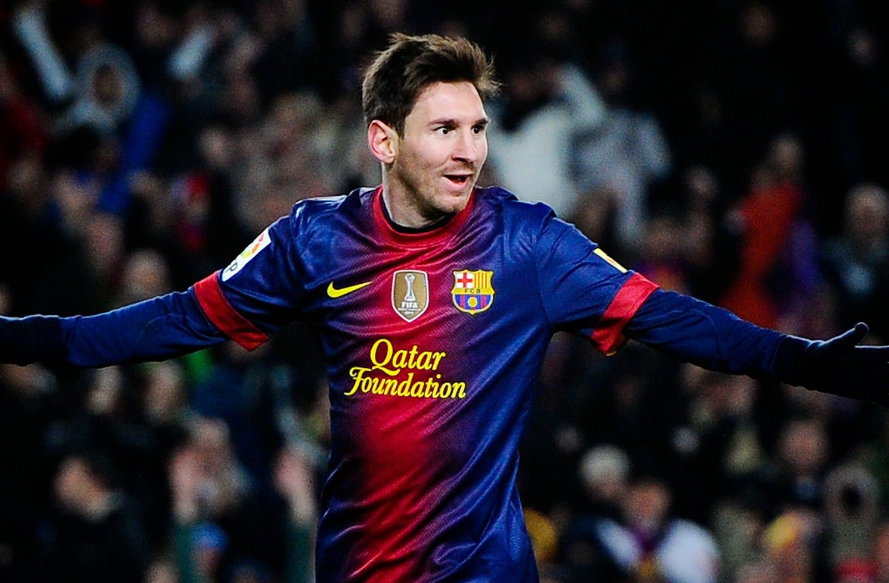
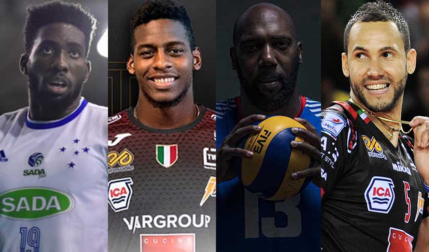
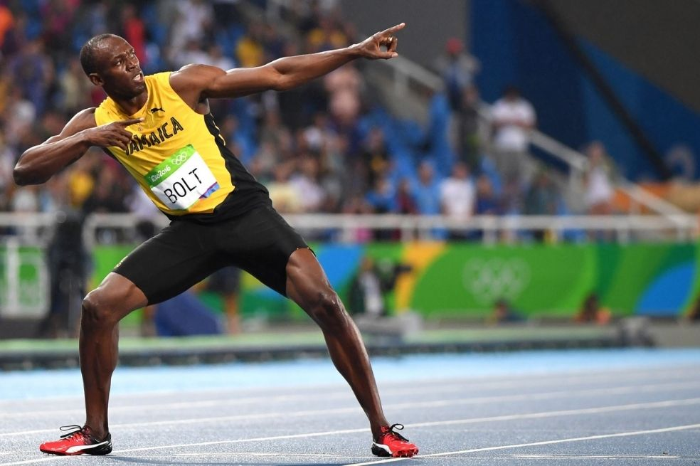

El fútbol, futbol2 o balompié3 (del inglés británico football) es un deporte de equipo jugado entre dos conjuntos de once jugadores cada uno, mientras los árbitros se ocupan de que las normas se cumplan correctamente. Es, ampliamente, considerado el deporte más popular del mundo, pues lo practican unas 270 millones de personas.4 También se le conoce como fútbol 11 por el número de jugadores de un equipo o fútbol asociación
El voleibol, vóleibol, volibol, vólibol, balonvolea o simplemente vóley (en inglés: volleyball; pronunciado /ˈvɑliˌbɔl/)1 es un deporte que se juega con una pelota y en el que dos equipos, integrados por seis jugadores cada uno, se enfrentan sobre una área de juego separada por una red central. El objetivo del juego es pasar el balón por encima de la red, logrando que llegue al suelo del campo contrario mientras el equipo adversario intenta impedir simultáneamente que lo consiga, forzándolo a errar en su intento.
El atletismo es un deporte que agrupa numerosas disciplinas. El término atletismo deriva de la palabra griega athlon que significa competencia o combate. En este conjunto de prácticas deportivas se busca superar a los adversarios en velocidad o en resistencia, ya sea en distancia o en mayor altura. Este deporte es considerado el deporte organizado más antiguo del mundo. La primera referencia histórica al atletismo se remonta al año 776 a. C. en Grecia, con una lista de los atletas ganadores de una competencia.
